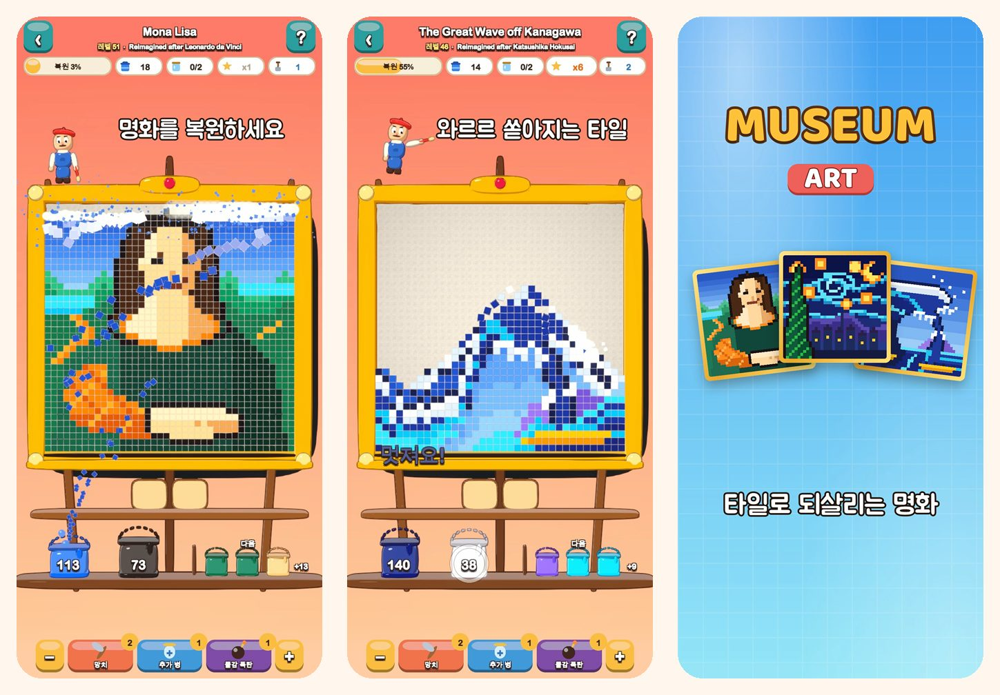

Museum Art
픽셀 아트 컬러 퍼즐
색을 탭하면 타일이 와르르! 모나리자부터 이스탄불, 파리, 로마, 뉴욕까지 51점의 픽셀 아트 그림을 복원해 보세요.
App Store에서 다운로드
게임 소개
Museum Art의 모든 그림은 알록달록한 네모 타일로 되어 있어요. 한 색씩 타일을 치우면 그림이 다시 빛나요.
플레이 방법
- 맨 아래 줄에 닿은 색 영역이나 선반의 양동이를 탭하면 타일이 제 양동이로 날아가요.
- 위쪽 타일이 모래처럼 미끄러져 내려오며 새로운 수가 열려요.
- 아직 그 색의 양동이가 없나요? 쟁반의 병에 잠시 담아 두세요.
- 쟁반을 적게 쓸수록 별을 더 많이 받아요.
복원할 그림 51점
- 쉽고 밝은 그림부터 시작해요: 열기구, 요트, 고양이, 등대.
- 자연: 눈 덮인 봉우리, 산속 호수, 벚꽃, 해 질 녘 사막.
- 이스탄불, 파리, 로마, 뉴욕을 도는 세계 여행.
- 거장의 보물창고: 가나가와 해변의 높은 파도, 별이 빛나는 밤, 수련, 우유를 따르는 여인, 인상, 해돋이, 모나리자를 픽셀 아트로 새롭게 그렸어요.
편안하고 공정하게
- 모든 레벨은 부스터 없이 풀 수 있고, 다시 하기는 무료예요.
- 어려울 땐 부스터: 망치, 추가 병, 페인트 폭탄.
- 언제든 확대해서 세세한 부분까지 볼 수 있어요.
- 그림마다 재미있는 이야기가 담겨 있어요.
- 19개 언어로 즐길 수 있어요.